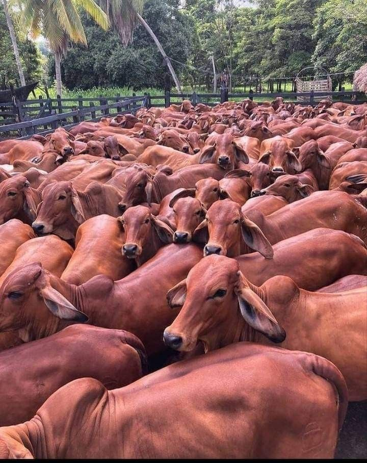

Historia de la Ganadería en Colombia
Conoce la evolución de la ganadería colombiana a través del tiempo.
Conocer la historia
Tradición y cultura
La ganadería ha formado parte del desarrollo rural del país.

Ganadería moderna
Tecnología, productividad y sostenibilidad para el futuro.